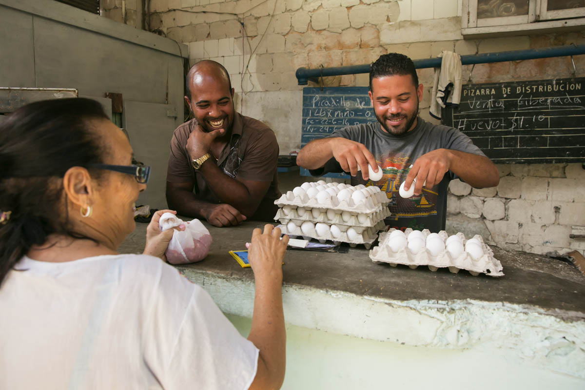
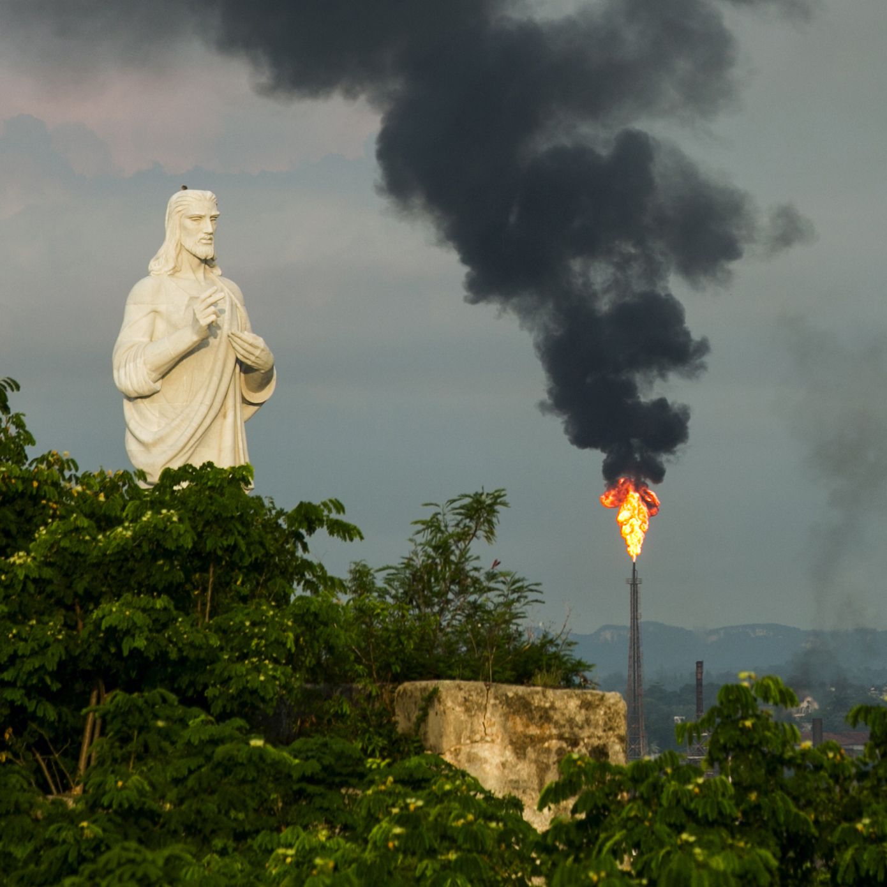

LÁZARO LÓPEZ, Cuba —
I’ve come a long way to see the spot where General Ángel del Castillo Agramonte, a hero of Cuba’s long struggle for independence from Spain, made his last stand.
That man, whom historians described as a “tempest on horseback,” was my grandmother’s grandfather, a U.S.-educated Cuban aristocrat who took up arms against the mother country.
Despite getting killed here in 1869, the general still casts a long shadow in my family. His portrait hangs in my Redmond living room, where my 5-year-old son calls him Abuelito.
To a family that cherishes Cuban origins going back to the days of Columbus, Abuelito stands for an island that had grown fairly rich and sophisticated as the hub of Spain’s New World empire. It fiercely fought for freedom while remaining tightly linked to the U.S. and the wider Western world.
That idea of Cuba was buried under Fidel Castro’s communist revolution. Hundreds of thousands, including my father and grandmother, fled the island. My uncle stayed, first to fight the revolution, then to embrace it.
In time, stifling controls and a long standoff with the U.S. condemned to economic stagnation what had been a modern country, albeit one full of disparities.
That conflict, as well as the state’s grip on the economy, has finally started to recede.

In the heat of the afternoon, Cubans build a house in the countryside in Ciego de Ávila province.
Last March, President Obama visited the island to bury what he called “the last remnant of the Cold War in the Americas,” easing U.S. travel and trade restrictions on the island and re-establishing diplomatic relations the previous year.
I had visited Cuba once, 15 years ago, and found the home of my ancestors a depressing ruin. This time, drawn by the specter of change, I’ve returned to get a glimpse of what kind of Cuba will emerge as it reconciles with the U.S.
Rummaging through the ashes of old family stories, I found a nation that’s slowly regaining some of its old capitalist bustle, even as it struggles with deepening inequality and bureaucratic rigidity.
The trip to Lázaro López from Havana, Cuba’s capital, takes four hours — first on a sparsely trafficked highway cutting through vast uninhabited stretches, then on the two-lane Central Road, where cars rented by tourists pile up behind ox carts.
A few dusty miles off the main road near the town of Ciego de Ávila there’s a giant Cuban flag marking a monument in the lush manigua where a Spanish stronghold once stood.
At age 35, Abuelito died assaulting that fort. His body, hurriedly buried by his retreating troops, wasn’t found until decades later, when a local boy digging up a root ended up pulling up the fallen general’s sword instead.
A man-sized obelisk pays homage to my ancestor. As far as I know, I’m the first among Abuelito’s descendants to visit since the revolution.
One thing strikes me: how well-kept this remote monument is, shaded by a red-flowered tree and flanked by manicured shrubbery.

Every Sept. 9, the anniversary of Abuelito’s death, local schoolchildren visit with songs and poems. On a bulletin board near the guardhouse one of them scribbled my ancestor’s final taunt to the Spaniards: “Come see how a Cuban general fights.”
It’s next to a phrase by comandante Fidel Castro, praising those who study history. I guess I’ve found some common ground with the revolution.
Cuba’s fight for independence from Spain was a family affair, in many cases literally, pitting Cubans against Iberian relatives.
Cuba’s nearly 60-year struggle with the U.S., a side effect of the Cold War that lingers like radioactive residue on both sides of the Florida Straits, is also for many a family dispute. Some exiles support a strict U.S. embargo on trade and tourism. Havana still lambastes the so-called “Miami mafia.”
But reconciliation is well under way, as evident in the 60 percent jump in arriving U.S. passengers seen in June. There will be many more soon, as U.S. airlines have begun to fly directly to Cuba.
It takes an hour for my luggage to clear the carousel in Havana’s teeming airport — a sign that the rekindling risks overwhelming Cubans while frustrating Americans.
Past midnight, I get to walk along the city’s famous seawall. Something strikes me as different from my previous visit: The lights are on. There’s traffic. Not only old clunkers from the late capitalist era, but new Korean and French cars.
In 2001, when I last came here, Cuba bore the living scars of the so-called Special Period in Time of Peace, actually a period of warlike scarcity that followed the end of a generous Soviet subsidy a decade before.
Back then, Cubans were barred from entering hotels even as they had to hustle for tourism’s crumbs. Few dared speak freely. <%= t.include("_galleryTemplate.html", { title: "Havana Gallery", chatter: "Chatter", keyword: "havana" }) %>
Today some of Havana’s glories don’t look so faded. Large parts of Old Havana, where I once saw streets that could have belonged in a World War II movie, are now a stunning re-creation of its heyday. Fancy restaurants, art galleries and sidewalk cafés populate grand European buildings restored over the last few years. There’s even a microbrewery in the Plaza Vieja, a 16th-century square.
Habaneros, 15 years ago survivors of an economic apocalypse, seem more confident. Since the middle of the last decade, pirated foreign shows shared on USB drives allow many to follow global trends. The Obama administration’s loosening of restrictions on Cuba-bound family remittances means more money on the street.
“There are still problems, such as scarcity,” says Modesto Phillip, a 55-year-old elevator technician working on a project to turn a Belle Époque shopping gallery into a luxury hotel. But, he adds, “the country has improved a lot. I see a good future.”
Thumping reggaeton, a blend of Caribbean rhythms and hip-hop, is everywhere, proof that despite the cliché, Cuba is not frozen in time. It just moves very slowly.
But there are signs of acceleration sparked by economic reforms undertaken by Raúl Castro after he stepped in for brother Fidel. Most Cubans are now allowed to travel, buy and sell property, and start small businesses.
In a town where it was famously difficult to get a nice meal, there are now more than 500 restaurants, including Asian fusion and farm-to-table fare. Shopping centers have sprouted in busy areas, giving some corners a sense of budding prosperity.
Where the socialist state not long ago employed practically everyone, now Cubans are allowed to work at a couple of hundred types of jobs on their own.
Some of these jobs are absurdly specific, such as fortune reader or button wrapper (yes, somebody who wraps buttons in fabric). But driving instructors and electricians are part of the list. It’s an acknowledgment by the revolution that its Soviet-era plans for a controlled economy are not attainable.
Most Cubans are still bound to government jobs. But the government, aware that egalitarianism was not the right spur, has introduced incentive pay in some areas.

Hosmay González, a former lab technician who runs a state-owned meat market in Central Havana, says his $16 monthly salary can triple if he exceeds his sales quota. “We want not only Cuba’s economy to improve, but for the population to benefit,” he says.
Cuba’s old cosmopolitanism flourishes, too. The Fábrica de Arte Cubano, a government-sponsored art and performance space, wouldn’t be out of place in Brooklyn or Los Angeles. A former industrial facility, it’s now brimming with the hip and the elegant.
Curiously, one of the many bars in the place offers Miller Lite, an unlikely piece of contemporary Americana here. Camila Pérez, a 25-year-old bartender, found it at a local store, likely brought in by one of the many “mules” who supply local restaurants with goods bought in Miami.
Pérez has her own story of separation. Her grandmother was a dissident journalist who fled for the U.S. in the 1990s, where Pérez’s father joined her. Pérez stayed in Cuba with her mom. Now living in Miami Beach, her father refuses to come back to Cuba, which he considers a hard-line dictatorship.
Pérez says it is not, and that things are opening up. “We’re going to have access to what everybody else has,” she says. “It’s all about not getting angry at each other.” <%= t.include("_galleryTemplate.html", { title: "Fabrica Gallery", chatter: "Chatter", keyword: "fabrica" }) %>
The fortress of San Carlos de la Cabaña, which overlooks Havana’s harbor, has a dark reputation. It was long a dungeon for political prisoners, where opponents of the revolution met death by firing squad. My uncle Carmelo González del Castillo spent time here in 1962 for plotting against Castro.
Now throngs of Cuban and foreign tourists come to see the nightly firing of the fortress’ cannon. The Adonia, which in May was the first U.S. cruise ship to touch Cuban ports in more than a half-century, has just sailed out of the harbor.
The ship is a portent of the expected arrival of mainstream U.S. tourists, a potential money gusher.
But that bounty may not come in time to save Cuba from a painful economic reckoning.
A big part of the reason Cuba was able to rebound from the Special Period is a 16-year-old deal in which Venezuela provides cheap oil in exchange for Cuban doctors and other technicians. It’s been like a Soviet subsidy redux.

That lifeline is threatened by Venezuela’s ongoing collapse, the result of the oil-rich country’s attempt at Cuban-style socialism.
“Cuba has very few options if net deliveries by (Venezuelan oil company) PDVSA fail to materialize,” says Jorge Piñon, a Cuba energy expert at the University of Texas.
Already the Cuban government has mandated cuts in fuel and power consumption, sparking fears of a new Special Period.
There’s also the question of whether freer markets will lead to democracy.
Cubans seem looser with their complaints than 15 years ago, even to foreign journalists. Iván Montenegro, 67, a former laboratory employee who in retirement can barely make ends meet, says he is disappointed with the revolution. “They exploited me,” he says.
But the government keeps a tight rein on dissidents and a monopoly on media. 14ymedio, a news site run by government critic Yoani Sánchez, can’t be accessed from public Wi-Fi hot spots, even though Spain’s El País and The Wall Street Journal can.
A TV cameraman I spoke to said that while there’s more room on newscasts to report on what people are talking about on the streets, some subjects remain taboo, such as a rise in vagrancy. “What seems like a great victory is instead a great defeat,” he said, referring to the reforms.
Raúl Castro, who is now 85, says he will hand power to a new generation in 2018. But few expect Cuba’s one-party state to change much.
Gregory Biniowsky is a Havana-based lawyer for Gowling WLG, a global law firm. He helps foreigners navigate investment opportunities here.

Men deliver goods to market by bike in Havana — a common sight due to the high price of cars.
Biniowsky, a thoroughly Cubanized Canadian from British Columbia who has lived here on and off since the Special Period, says the government envisions reforms that would make citizens more prosperous, but economic objectives remain subject to political ones.
“They want their system to survive,” Biniowsky says. “They want an economy where social equality plays a big role.”
More than a surrender, the state’s aggiornamento is an overdue adaptation to a world where Cuba has no more patrons.
Idania del Río, the well-traveled owner of Clandestina, a design store in old Havana that sells irreverent prints and clothing, says Cuba has transitioned from a place where people “have been cooking in their own stew” to a more open society.
Many young people right now prioritize making money.
“Lots of people don’t care about politics, they’re more focused on achieving their own goals,” del Río says.